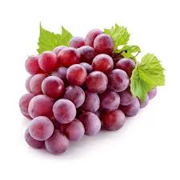
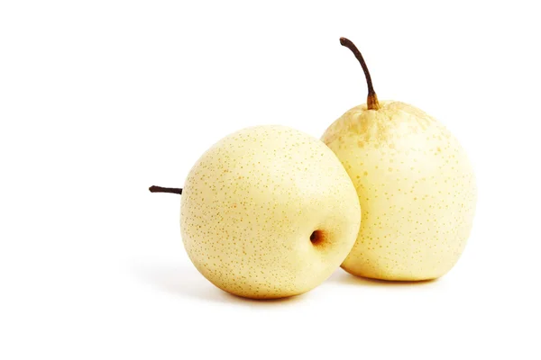

Apel Fuji Jepang

Apel bertekstur renyah dan manis dari Jepang. Kaya vitamin C dan antioksidan tinggi.
Rp 50.000 / 1kg
Kiwi New Zealand

Buah kecil dengan rasa segar dan asam manis. Sumber vitamin C, serat, dan kalium.
Rp 38.000 / 1kg
Anggur Red Globe
Anggur impor berbiji besar, rasanya manis dan segar. Cocok dimakan langsung atau dijus.
Rp 100.000 / 1kg
Pir Cina
Buah berair dan manis dengan tekstur lembut. Baik untuk menjaga hidrasi tubuh.
Rp 35.000 / 1kg